| Introduction | Main elements |
Messages sent and received |
Graphical interface |
Scripts | Reference | Functions index |
Documentation
IanniX commands must specify a target at each execution:
idrefers to a specific object.
Example:remove 2group_idrefers to the entire group that can be a word.
Example:remove totoallrefers to all objects.
Example:remove allcurrentrefers to the last created object.
Example:remove current
Managing objects
Adding an object
Adds an object on the score, but does not specify its position (by default,
the object is set on (0,0,0)). The key word auto automatically
assigns an ID to your object.
add <objet> <id>
Example: add trigger 1
 |
Copy / paste this example in IanniX to understand how the code works!
run("add trigger 1");
|
Defining a group
Groups are identified by a number or word you are free to choose. Objects are
not required to be part of a group.
setGroup <target>
<group name>
Example: setGroup current triggers
| 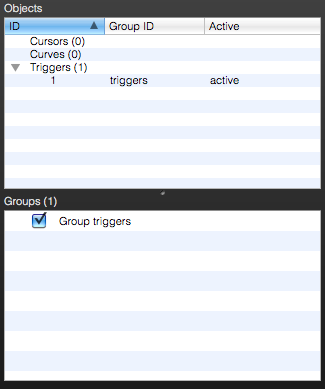 |
Copy / paste this example in IanniX to understand how the code works!
run("add trigger 1");
|
Space position
Sets an object on the score via the coordinates (x, y, z).
setPos <target> <x> <y> <z>
Example: setPos 1 1 2
0
| 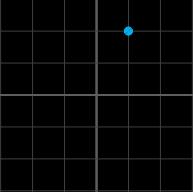 |
Copy / paste this example in IanniX to understand how the code works!
run("add trigger 1");
|
Enable / disable an object
An object is enable by default, but you can disable it.
setActive <target>
<0|1>
Example: setActive
1 0
| 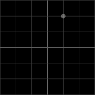 |
Copy / paste this example in IanniX to understand how the code works!
run("add trigger 1");
|
Assigning a message
This command sets the message that an object must send.
setMessage <target>
<period>, <variables>, ,message2, message3, …
Example: setMessage
current 1,
|
Copy / paste this example in IanniX to understand how the code works!
run("setMessage current 1,
|
The previously added trigger will respectively send: its ID, abscissa,
ordinate and the ID of cursor that triggered. |
Deleting an object
Deletes an object in the score thanks to its ID
remove <target>
Example: remove 1
|
Copy / paste this example in IanniX to understand how the code works!
run("add trigger 1");
|
Trigger
Time before release (NoteOff)
When a note is played thanks to a trigger, you can configure it to turn the
note off automatically after a configurable delay. Note-off time can be set
either by this method, which sets the time that is always used for this trigger,
or note-off time can be controlled with the duration parameter in the trigger's
message. Controlling the off-time in the message allows the time to be controlled
some score variables, changing as the score plays. The time before releaseshould
normally be set to zero when note-off time is not being sent in the messages of
this trigger.
setTriggerOff <target>
<delay>
Example: setTriggerOff
current 0.5
|
Copy / paste this example in IanniX to understand how the code works!
run("add trigger 1");
|
The previously created trigger will send a message "note off" after half a second |
Messages & variables related to a trigger
You can use the following variables in the messages sent by the triggers:
trigger_idID of the enabled triggertrigger_group_idID of the enabled grouptrigger_document_idname of the projecttrigger_xPosabscissatrigger_yPosordinatetrigger_distancestraight line distance from the trigger to the cursor at the time of collisiontrigger_value127 when the trigger is enabled and 0 when it is disabledtrigger_side0 when the trigger is on the left of the direction of cursor motion and 1 if on the right
You can also use any of the cursor_ variables of the colliding cursor, or the curve_ variables of the cursor's curve.
Curve
Circular curves & ellipses
Ellipses are defined by a major axis and a minor axis. To construct circles,
the two axes must have the same value.
setPointsEllipse <target>
<width> <height>
Example: setPointsEllipse
current 2 1
| 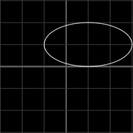 |
Copy / paste this example in IanniX to understand how the code works!
run("add curve 1");
|
Straight trajectory
A curve must be defined a sequence of points. The points index starts at
0.
Note that point coordinates are defined to be relative to the position of the
curve object.
For more detail, see the section on drawing
curves in the scripting section.
setPointAt <target>
<point index> <x> <y>
Example: setPointAt
current 1
3 3
|
Copy / paste this example in IanniX to understand how the code works!
run("add curve 1");
|
Bézier curve
To add points to a Bezier curve, use:
setPointAt <target>
<path>
Bézier curves are formed from curved line segments defined giving the endpoint
of each subsequent segment. The curvature is defined by providing two additonal
"control points" to the setPointAt function, one to define the
direction of the tangent to curve at its start point and the other to control the
direction of the tangent to the curve at its end point.
For more detail on drawing with Bezier curves, see the section on drawing curves in the scripting section.
Text
A character can also be played like a curve.
setPointsTxt <target>
<scaling> <font> <text>
Example: setPointsTxt
current 0.1 Arial a
|
Copy / paste this example in IanniX to understand how the code works!
run("add curve 1");
|
SVG curve — cubic path
A SVG curve is defined by a path that you can directly import from another
software by copy / paste.
setPointsSVG <target>
<width> <height> <svg
path>
Example: setPointsSVG
current 5 5 M637.599,1569.972c0,0,89.127,0,222.818,
0c8.913,0,18.023,0,27.381,0.113C901, 1570,913,1573,926,1576c67,15,128,43,
198,28c9-2,17.833-4.277,26.554-6.685c8. 72-2.407,17.255-5.074,25.247-8.562C1224,
1567,1239,1514,1256,1469c18-48,69-29, 101-9c81.375,48.125,161.219,103.141,
254.032,110.08c13.259,0.991,26.782, 1.001,40.616-0.129C1716,1574,1788,
1562,1842,1606c39,32,62,97,119,
90c44-6,70-47,101.551-72.846
| 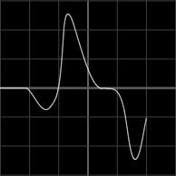 |
run("add curve auto");
|
SVG curve — polygons
The SVG path of these curves is simply a set of points (absolutely
positioned).
setPointsSVG2 <target>
<scaling> <svg
path>
Example: setPointsSVG2
current 1 1,1 1,2 -1,2 -1,-2 -2,0
| 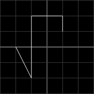 |
Copy / paste this example in IanniX to understand how the code works!
run("add curve 1");
|
Automatic vectorization
A curve can be directly constructed from an image by an automatic
vectorization.
setPointsImg <target>
<scaling> <filename>
Example: setPointsImg
current 0.1 ./Examples/trigger_speaker.png
| 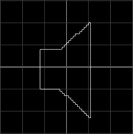 |
Copy / paste this example in IanniX to understand how the code works!
run("add curve 1");
|
Size
The size of objects can be changed directly.
setResize <target>
<width> <height>
Example: setResize
current 2 1
|
Copy / paste this example in IanniX to understand how the code works!
run("add curve 1");
|
Cursor
Assign a curve
After creating your cursor, make sur you have assigned the curve you want it
to follow. You can use the keyword lastCurve to designate the last
curve added.
setCurve <cursor target>
<curve target>
Example: setCurve 2 lastCurve
| 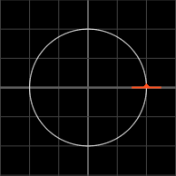 |
Copy / paste this example in IanniX to understand how the code works!
run("add curve 1");
|
Width of the play head
You can edit in real time the width of a cursor in order to enable or disable
triggers nearby.
setWidth <target>
<width>
Example: setWidth current 3.5
| 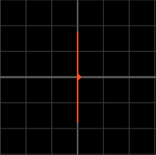 |
Copy / paste this example in IanniX to understand how the code works!
run("add cursor 1");
|
Instantaneous position
The position of a cursor can be modified in real time. This instruction does
not work if you include it directly in your script, because at each execution,
IanniX does a fastrewind.
setTime <target> <time>
Example: setTime 11 0
|
Copy / paste this example in IanniX to understand how the code works!
run("add curve 1");
|
Offset
You can choose to start your cursor at a certain point of the curve (marked in
seconds) and limit it between certain values (also in seconds).
For example, the 2 4 6 offset means that your cursor will start your curve at the
position t=2s then will travel to point t=6s to start again at the point
t=4s.
setOffset <target>
<initial> <start> <end>
Example: setOffset
current 3 1 7
|
Copy / paste this example in IanniX to understand how the code works!
run("add curve 1");
|
Mapping values
You can set your cursor to send values within a chosen interval. For example,
if it is operating in a 3x3 square, it can still send coordinates as values
between 0 and 1.
Use setBoundsSource to indicate to IanniX the interval in which your cursor is
located and setBoundsTarget to set the range of your sent values. Generally
BoundsSource is correctly set by default.
You must use the variables cursor_value_x,
cursor_value_y, collison_value_x ou collison_value_y that values sent are those of
BoundsTarget.
setBoundsSource <target>
<x-top-left-corner> <y-top-left-corner> <x-bottom-right-corner> <y-bottom-right-corner>
setBoundsTarget <target>
<x-top-left-value> <y-top-left-value> <x-bottom-right-value> <y-bottom-right-value>
Example: setBoundsSource
2 0 3 3 0
et setBoundsTarget 2
0 1 1 0
|
Copy / paste this example in IanniX to understand how the code works!
run("add curve 1"); run("setBoundsSource 2
0 3 3 0");run("setBoundsTarget 2 0 1 1 0"); run("setMessage 2 250, direct:// cursor_value_x cursor_value_y"); |
Messages & variables related to the cursor
You can use the following variables in the messages sent by cursors:
cursor_idcursor IDcursor_group_idgroup ID of the cursorcursor_document_idname of the projectcursor_xPoscursor abscissacursor_yPoscursor ordinatecursor_timecursor position on the curve in secondscursor_time_percentcursor position on the curve in percent (between 0 and 1)cursor_value_xabscissa in agreement with the BoundsTarget specifiedcursor_value_yordinate in agreement with the BoundsTarget specifiedcursor_angleangle of the cursor relative to the curvecursor_nb_loopnumber of cycles on the curve
Cursors can also send information about the curve on which they are located and the curves they intersect.
curve_idID of the curve affected by the cursorcurve_group_idgroup ID of the curvecurve_document_idname of the projectcurve_xPosabscissa of the first point of the curvecurve_yPosordinate of the first point of the curvecollision_curve_idID of the crossed curvecollision_xPosabscissa of the intersection pointcollision_yPosordinate of the intersection pointcollison_value_xabscissa of the intersection point in agreement with the BoundsTarget specifiedcollision_value_yordinate of the intersection point in agreement with the BoundsTarget specifiedcollision_distancestraight line distance between the collision point and the cursor
Speed in IanniX
The speed of the cursors is composed of several parameters: speed,
speedfactor, speedf and pattern.
speed is the global speed of the score, speedfactor is the
speed of the cursor itself, speedf is the instantaneous speed of the
cursor and pattern defines the number and direction of the cycles.
We can thus write the speed of a cursor:
(speed)x(speedfactor)x(speedf)x(pattern)
with pattern.
Speed of the score
You can set the global speed of the score. A negative speed will evolve over time in the negative direction. The speed is a sort of velocity factor that is combined with the speed factor or duration parameter of each cursor to determine the speed, or more intuitively the transit time of the cursor on its curve.
For more details of the determination of cursor speed, see the following
section on the "Speed of a Cursor."
speed <speed>
Example: speed 20
|
Speed of a cursor
Cursors have a speed factor independent of each other. The travel time of a curve is also configurable. The cursor will evolve in the negative direction if the speed is negative, but time will continue to flow naturally.
Cursor speed is best understood by thinking in terms of the time duration required for a given cursor to traverse its path one time. If the master speed of the transport is set to 1.0 (with the "speed" command or the transport slider), and a cursor's time is set to say 10.0 seconds, the cursor will take 10 seconds to traverse the curve once. Doubling the master speed to 2 would cut the transit time of this cursor to 5.0 seconds.Thus each cursor can have it's own transit time (or inversely, speed), proportional to the master speed of the score.
To set the cursor speed in terms of the duration of the transit time, use the
following form of the setSpeed command:
setSpeed <target> auto
<duration>
To set the speed of a cursor in terms of speed factor (i.e. speed in the same
units as used by the master slider) use the following form of the command:
setSpeed <target>
<speed factor>
Example: setSpeed 11 4
|
Copy / paste this example in IanniX to understand how the code works!
run("add curve 1");
|
Instantaneous speed of a cursor
Cursors have an instantaneous speed factor independent, very useful for
real-time performances. As setSpeed, a negative speed is possible without
affecting the global speed of the score.
setSpeedF <target>
<speed factor>
Example: setSpeedF
11 cursor_yPos
run("add curve 2");
|
Pattern
This parameter refers to the direction and the number of cycles. For example,
with 1 1 0, the cursor will perform two cycles in the positive
direction before stopping. The equivalent write is 2 0.
setPattern <target> 0 0
<pattern>
Example: setPattern
current 0 0 1
-1
|
Copy / paste this example in IanniX to understand how the code works!
run("add curve 1");
|
Navigating into the scores
Erasing a score
Erasing all objects into the score
clear
|
Copy / paste this example in IanniX to understand how the code works!
run("clear");
|
Zoom
Adjust the zoom using the script. The factor is in percent. e.g. A factor of
200 doubles the size of the display area.
zoom <zoomfactor>
| 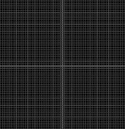 |
Copy / paste this example in IanniX to understand how the code works!
run("clear"");
|
Resizing objects regardless of zoom
Enabled by default, can automatically increase or decrease the size of the
triggers and cursors when you zoom in / out the score in order to facilitate
reading. Only the visual aspect is affected, the actual size of the objects is
not changed.
autosize <0|1>
| 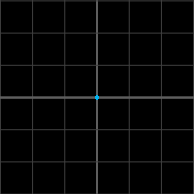 |
Copy / paste this example in IanniX to understand how the code works!
run("add trigger 1");
|
Placing a point in the center of the screen
Placing the point (x,y) in the center of the workspace
center <x> <y>
|
Copy / paste this example in IanniX to understand how the code works!
run("clear");
|
Changing the viewing direction
Rotate the view about the x, y and z axes
rotate <RotationAboutX-Axis>
<RotationAboutY-Axis> <RotationAboutZ-Axis>
|
Copy / paste this example in IanniX to understand how the code works!
run("rotate 45 0 0");
|
Playing the score
Enabling the playback
play
|
Copy / paste this example in IanniX to understand how the code works!
run("play");
|
Fast Rewind
Back to 000:00.000
fastrewind
|
Copy / paste this example in IanniX to understand how the code works!
run("fastrewind");
|
General display of the scores
Adding text
You can add a text description of your items on the score.Show / hide these descriptions with the button 7 of the toolbar (see Graphic interface).
All types of characters are accepted, there is no limit in number.
setLabel <target>
<label>
Example: setLabel current Hello World
!
| 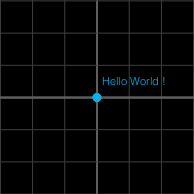 |
Copy / paste this example in IanniX to understand how the code works!
run("add trigger auto");
|
Size of objects
Unlike setResize, this function
modifies the thickness of a curve or a cursor and the size of a trigger.
setSize <target> <size>
Example: setSize 1 10
| 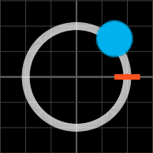 |
Copy / paste this example in IanniX to understand how the code works!
run("add curve 1");
|
Paths format
Sets a style dotted with dash pattern which must be a sequence of 0
and 1, dash style defines the space between each dot.
setLine <target> <dash style> <dash
pattern>
Example: setLine 1 2000 1
| 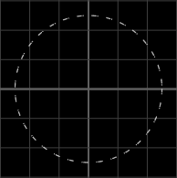 |
Copy / paste this example in IanniX to understand how the code works!
run("add curve 1");
|
Colors
You can directly specify the color of an object using HSB or RGB codes with
management of the opacity A.
The RGB values range from 0 to 255 and HSB ones range from 0 to 360. The opacity A is
between 0 (fully transparent) and 255 (no transparency).
Color of an active object that does not send any messages
Modify the color of active objects.
setColorActive <target>
<variable>
setColorActive <target>
<r> <g>
<b> <a>
setColorActive2 <target>
<h> <s>
<b> <a>
Example: setColorActive
1 0 255 0 255
| 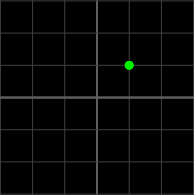 |
Copy / paste this example in IanniX to understand how the code works!
run("add trigger 1");
|
Color of an inactive object that does not send any messages
Modify the color of inactive objects.
setColorInactive <target>
<variable>
setColorInactive <target>
<r> <g>
<b> <a>
setColorInactive2 <target>
<h> <s>
<b> <a>
Example: setColorInactive
1 0 0 255 255
| 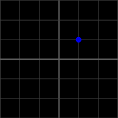 |
Copy / paste this example in IanniX to understand how the code works!
run("add trigger 1");
|
Color of an active object that send messages
Modify the color of an active object for which a message has already been
set.
setColorActiveMessage <target> <variable>
setColorActiveMessage <target> <r> <g> <b> <a>
setColorActiveMessage2 <target> <h> <s> <b> <a>
Example: setColorActiveMessage2 1 360 255 255
255
| 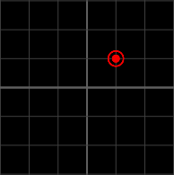 |
Copy / paste this example in IanniX to understand how the code works!
run("add trigger 1");
|
Color of an inactive object that send messages
Modify the color of an inactive object for which a message has already been
set.
setColorInactiveMessage <target> <variable>
setColorInactiveMessage <target> <r> <g> <b> <a>
setColorInactiveMessage2 <target> <h> <s> <b> <a>
Example: setColorInactiveMessage 1 0 127 127
200
| 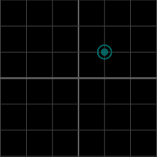 |
Copy / paste this example in IanniX to understand how the code works!
run("add trigger 1");
|
Creating a variable color
IanniX can also save a color as a variable for reusing it more easily.
registerColor <variable>
<r> <g>
<b> <a>
registerColor2 <variable>
<h> <s>
<b> <a>
Example: registerColor
rougeRGB 255 0 0 255 et
registerColor2 rougeHSB 360 255 255 255
| 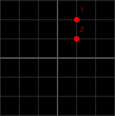 |
Copy / paste this example in IanniX to understand how the code works!
run("registerColor rougeRGB 255 0 0 255");
|
Textures
Customize your score with your own images.
You can directly edit the background of the score or the appearance of the triggers
thanks to the following variables:
backgroundbackgroundtrigger_activeactive triggerstrigger_inactiveinactive triggerstrigger_active_messageactive triggers with messagetrigger_inactive_messageinactive triggers with message
Creating a variable texture
Save your texture as a variable. If you are using the following variables, the
display is directly modified because native textures are saved under those
variables. Use the tool "restore triggers original shapes" from the inspector
"scripts & styles" to find the original textures.
registerTexture <variable>
<x-top-left-corner> <y-top-left-corner> <x-bottom-right-corner> <y-bottom-right-corner> <file
name>
Example: registerTexture
trigger_active -1
1 1 -1 ./Examples/trigger_triangle.png
| 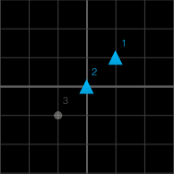 |
Copy / paste this example in IanniX to understand how the code works!
run("registerTexture trigger_active -1 1 1 -1
./Examples/trigger_triangle.png");
|
Texture of an active object that does not send any messages
Modify the aspect of one active object. You can also use a group name or one of
the following variables:
setTextureActive <target>
<variable>
Example: setTextureActive
1 triangle
 |
Copy / paste this example in IanniX to understand how the code works!
run("registerTexture triangle -1 1 1 -1
./Examples/trigger_triangle.png");
|
Texture of an inactive object that does not send any messages
Modify the texture of an object or a group of inactive objects.
setTextureInactive <target>
<variable>
Example: setTextureInactive
2 triangle
|
Copy / paste this example in IanniX to understand how the code works!
run("registerTexture triangle -1 1 1 -1
./Examples/trigger_triangle.png");
|
Texture of an active object that send messages
Modify the texture of an object or a group of active objects with message.
setTextureActiveMessage <target> <variable>
Example: setTextureActiveMessage
triggers triangle
| 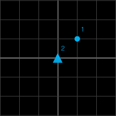 |
Copy / paste this example in IanniX to understand how the code works!
run("registerTexture triangle -1 1 1 -1
./Examples/trigger_triangle.png");
|
Texture of an inactive object that send messages
Modify the texture of an object or a group of inactive objects with
message.
setTextureInactiveMessage <target> <variable>
Example: setTextureInactiveMessage triggers
triangle
| 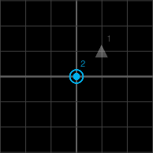 |